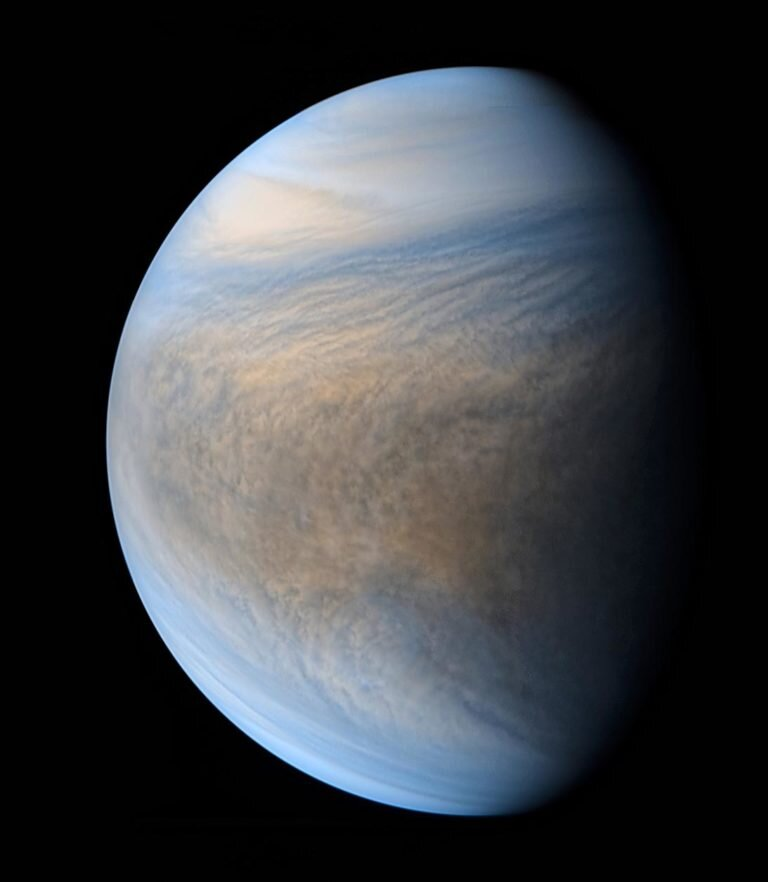
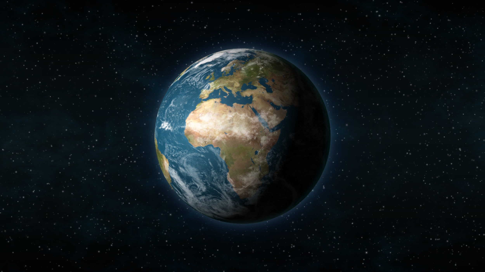
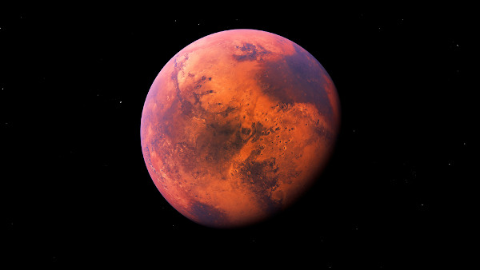

O SISTEMA SOLAR
Sistema Solar é um conjunto formado por oito planetas e outros corpos celestes, que orbitam o Sol, a sua principal estrela. Está localizado na Via Láctea, uma das galáxias que formam o Universo. São planetas do Sistema Solar: Mercúrio, Vênus, Terra, Marte, Júpiter, Saturno, Urano e Netuno.

CONHEÇA UM POUCO SOBRE OS PLANETAS

Mercúrio é um metal líquido à temperatura ambiente, conhecido desde os tempos da Grécia Antiga. Também é conhecido como hidrargírio, hidrargiro, azougue e prata-viva, entre outras denominações. Seu nome homenageia o deus romano Mercúrio, que era o mensageiro dos deuses. Essa homenagem é devida à fluidez do metal."Mercúrio é considerado o menor planeta do Sistema Solar desde o rebaixamento de Plutão a planeta anão. A proximidade de Mercúrio com o Sol (é o planeta mais próximo dessa estrela) torna o desenvolvimento da vida nesse planeta bastante difícil, pois há altas e baixas temperaturas, instabilidades climáticas, atmosfera fraca e uma superfície escura, talvez devido à presença de grafite ou mesmo pelas altas temperaturas, que “carbonizam” as paisagens. Mesmo com todas as adversidades, é um planeta intrigante e que chama a atenção dos astrônomos por conter água, tanto em estado sólido quanto líquido (em menores quantidades)."
A rotação de Vênus ocorre de leste para oeste, contrária a todos os planetas do Sistema Solar. O planeta recebeu esse nome em homenagem à Vênus, a deusa romana da beleza e do amor. Vênus pode ser visto da Terra sem o auxílio de equipamentos.O planeta Vênus é o segundo do nosso sistema solar a partir do Sol e o mais próximo da Terra, a apenas 61 milhões de quilômetros de distância. Uma de suas principais características é o fato de, como um planeta rochoso, sua superfície ser composta por vales e altas montanhas, cheias de vulcões.
A Terra é o terceiro planeta a contar do Sol e o quinto maior do Sistema Solar. Sua forma é praticamente esférica, com uma deformação que causa um achatamento dos pólos. Até onde se sabe o planeta em que vivemos é o único do nosso sistema solar em condições de abrigar vida da forma como a conhecemos.A crosta, o manto, o núcleo, a litosfera e a mesosfera compõem a estrutura terrestre. O estudo das camadas da Terra é realizado na superfície, observando seus fenômenos. As camadas da Terra possuem duas abordagens distintas, uma segundo a composição química e a outra conforme o comportamento físico.
Marte é o quarto planeta a partir do Sol, o segundo menor do Sistema Solar. Batizado em homenagem a divindade romana da guerra, muitas vezes é descrito como o "Planeta Vermelho", porque o óxido de ferro predominante em sua superfície lhe dá uma aparência avermelhada.[1] Marte é um planeta rochoso com uma atmosfera fina, com características de superfície que lembram tanto as crateras de impacto da Lua quanto vulcões, vales, desertos e calotas polares da Terra. O período de rotação e os ciclos sazonais de Marte são também semelhantes aos da Terra, assim como é a inclinação que produz as suas estações do ano. Marte é o lar do Monte Olimpo, a segunda montanha mais alta conhecida no Sistema Solar (a mais alta em um planeta), e do Valles Marineris, um desfiladeiro gigantesco. A suave Bacia Polar Norte, no hemisfério norte marciano, cobre cerca de 40% do planeta e pode ser uma enorme marca de impacto.[2][3] Marte tem duas luas conhecidas, Fobos e Deimos, que são pequenas e de forma irregular. Estas luas podem ser asteroides capturados,[4][5] semelhante ao 5261 Eureka, um asteroide troiano marciano.

Júpiter é o maior planeta do Sistema Solar, tanto em diâmetro quanto em massa, e é o quinto mais próximo do Sol.Possui menos de um milésimo da massa solar, contudo tem 2,5 vezes a massa de todos os outros planetas em conjunto. É um planeta gasoso, junto com Saturno, Urano e Netuno. Estes quatro planetas são por vezes chamados de planetas jupiterianos ou planetas jovianos, e são os quatro gigantes gasosos, isto é, que não são compostos primariamente de matéria sólida.Júpiter é composto principalmente de hidrogênio, sendo um quarto de sua massa composta de hélio, embora o hélio corresponda a apenas um décimo do número total de moléculas. O planeta também pode possuir um núcleo rochoso composto por elementos mais pesados, embora, como os outros planetas gigantes, não possua uma superfície sólida bem definida. Por causa de sua rotação rápida, de cerca de dez horas, ele possui o formato de uma esfera oblata (ele possui uma suave, mas perceptível, saliência em torno do equador). Sua atmosfera externa é visivelmente dividida em diversas faixas, em várias latitudes, resultando em turbulência e tempestades nas regiões onde as faixas se encontram.

Saturno é o sexto planeta a partir do Sol e o segundo maior do Sistema Solar atrás de Júpiter. Pertencente ao grupo dos gigantes gasosos, possui cerca de 95 massas terrestres e orbita a uma distância média de 9,5 unidades astronômicas. Possui um pequeno núcleo rochoso, circundado por uma espessa camada de hidrogênio metálico e hélio. A sua atmosfera, também composta principalmente de hidrogênio, apresenta faixas com fortes ventos, cuja energia provém tanto do calor recebido do Sol quanto da energia irradiada de seu centro. Entretanto, estas bandas possuem aspecto pouco proeminente, com coloração que varia do marrom ao amarelado, devido à espessa névoa que envolve o planeta, além das camadas de nuvens. Sazonalmente surgem grandes sistemas de tempestades, além de vórtices permanentes existentes nos polos.